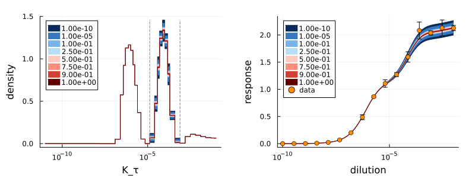
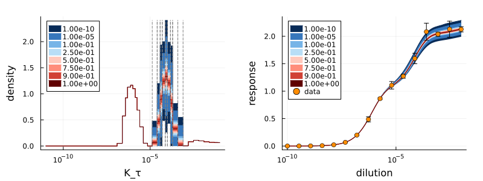
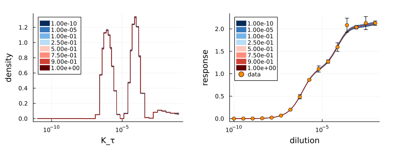
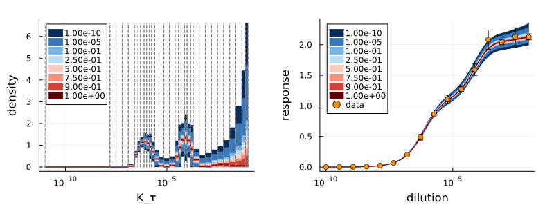

Uncertainty estimation
The posterior and log-posterior objectives (as used in the Fitting tutorial) from FittingObjectiveFunctions.jl belong to a Bayesian data analysis approach. In this analysis regime, it is important to consider not only the best fit but also less probable parameters to estimate the uncertainty of the fit result.
EpitopeUncertainty - construction
The EpitopeUncertainty type collects and stores the uncertainty of a $K_\tau$-density. To illustrate how to obtain an uncertainty estimation, we consider the adaptive fit results from the Fitting tutorial:
A question of interest could be the uncertainty of the individual peaks. For this, the index-bins belonging to the different peaks need to be identified. Using peak_detection and setting the threshold to 0.01 results in:
bins, ranges = peak_detection(adaptive_result.grid, 0.01)([[5, 6, 7, 8, 9, 10, 11, 12, 13, 14], [16, 17, 18, 19, 20, 21, 22, 23, 24], [26, 27, 28, 29, 30, 31, 32], [1, 2, 3, 4], [15], [25]], [[1.2500875e-7, 7.103454589843753e-6], [1.3206909179687505e-5, 0.0007822421875000004], [0.0015634843750000006, 0.10000000000000005], [1.0000000000001413e-11, 1.2500875e-7], [7.1034545898437526e-6, 1.3206909179687506e-5], [0.0007822421875000004, 0.0015634843750000009]])peak_detection returns the identified peaks both as bins (indices of intervals) and the grid-domain ranges. By default, the regions between peaks are also included (fill = true) and the peaks are determined with volume_normalization = :log (see Background: log-volume normalization).
For plotting purposes (bin_analysis_plot, peak_analysis_plot), the bins need to specify the grid-domain ranges, e.g. [[1e-10,1e-8],[1e-5,1e-3]]. For the uncertainty estimation and uncertainty plotting (uncertainty_plot), the bins need to specify the grid intervals that are varied, e.g. [[1,2,3],[5,8]].
Defining grid-domain ranges is often easier than figuring out which gird intervals belong to those ranges. The select_indices function allows to pick the interval indices belonging to a gird-domain range.
Having defined the interval groups of interest, the uncertainty can be estimated by fixing all parameters to the fit result, shifting uniformly only the parameters belonging to the current group of interest. This process is then repeated for all interval groups. Evaluating the objective function for each shift allows to estimate the uncertainty of the interval group.

This uncertainty estimation from bin-wise shifting can be obtained with the following EpitopeUncertainty constructor:
adaptive_options = AdaptiveOptions(objective = :log_posterior,
prior_generator = scaled_log_volume_prior(500),
offset = adaptive_result.optimizer[end]
)
eu = EpitopeUncertainty(data,adaptive_result.grid, bins,
levels = [1e-10,1e-5,0.1,0.25,0.5,0.75,0.9,1],
options = adaptive_options
)EpitopeUncertainty([1.0e-10, 1.0e-5, 0.1, 0.25, 0.5, 0.75, 0.9, 1.0], [0.002656958570482257 0.0 … 0.0 0.0; 0.0033194616388737474 0.0 … 0.0 0.0; … ; 0.004641031432126458 0.00030003000300030005 … 0.007353045427095161 0.003751872468798145; 0.004641031432126458 0.00030003000300030005 … 0.01171345131205015 0.008112278353753133], [0.0058411514441276575 0.0015001500150015 … 0.07661994196111506 0.07301876900281805; 0.005441111440127258 0.0011001100110011 … 0.05761804177109606 0.05401686881279904; … ; 0.004641031432126458 0.00030003000300030005 … 0.01611389135605455 0.012512718397757534; 0.004641031432126458 0.00030003000300030005 … 0.01171345131205015 0.008112278353753133], nothing, nothing)The bin-wise shifting constructor EpitopeUncertainty generates the objective function automatically, using the same methods as adaptive_dose_response_fit, hence the need for an AdaptiveOptions object. In the example above, the options were chosen to match those from the Fitting tutorial section.
Notice the offset = adaptive_result.optimizer[end] line. Since the default fitting algorithm that was recreated in the Fitting tutorial section uses the offset parameter, the estimated offset must be added to the uncertainty estimation, as it shifts up the resulting dose-response curve globally. Recall, that the offset parameter is the last element of the returned optimizer field of an AdaptiveResult object.
Finally, the uncertainty levels are specified as fractions of the best objective value.
There is also an EpitopeUncertainty constructor that uses samples, drawn from a posterior or log-posterior objective. However, the sample constructor does not support the selection of bins. Quantiles corresponding to the chosen levels are calculated for each parameter individually. Furthermore, no sample algorithm is provided by the AntibodyMethods packages.
EpitopeUncertainty - plotting
AntibodyMethodsDoseResponseRecipes.jlprovides a plotting recipe for EpitopeUncertainty objects. To define the color-gradient for the uncertainty visualization, Colors.jl is used here. Both packages (and also Plots.jl) are automatically exported by AntibodyMethodsDoseResponseConvenience.jl. The EpitopeUncertainty object eu can be plotted by passing the grid adaptive_result.grid and the EpitopeUncertainty object eu to the plot function:
uncertainty_colors =colormap("RdBu", 8)[end:-1:1]
plot(adaptive_result.grid, eu, xaxis = :log, legend = :topleft,
colors = uncertainty_colors,
hide_labels = false,
bins = bins
)The colormap function from Colors.jl creates an array of colors (here 8 colors, which matches the number of uncertainty levels). The [end:-1:1] is used to reverse the colors (now from blue to red). Thus, the lower levels (less certain) are blue while the best result is red.
Keywords with default arguments
volume_normalization = :log: The volume-normalization as discussed in Background: log-volume normalization.colors = [:gray]: An array of colors (thatPlots.jlaccepts for thecolorkeyword) that correspond to the different uncertainty levels. If the array contains less colors than uncertainty levels, the last color is repeated for the remaining levels.opacities = [1]: Array of opacities (number between0and1) that correspond to the different uncertainty levels. Again, the last opacity is repeated if there are more uncertainty levels than opacities.reverse = false: Iftruethe plotting order of the uncertainty levels is reversed. Since the uncertainty ranges are plotted on top of each other, this can become necessary when theEpitopeUncertaintyconstructor for samples is used, where larger levels correspond to larger uncertainty (as opposed to the bin-wise shifting constructor).hide_labels = true: Iftruethe labels are omitted. Can become necessary when a large number of uncertainty levels is used.bins = nothing: Specifies the positions for the bin-markers (dashed lines). The bins should be the same as those used in theEpitopeUncertaintyconstructor. Ifnothing, bin markers are omitted.bin_color = :gray: Color of the bin markers.
As explained above, the uncertainty is estimated by keeping all bins fixed, only shifting one bin at a time. Thus, the bin uncertainties have to be considered individually.
It is not admissible to combine the uncertainty of the bins: E.g. to consider shifting the first peak up and shifting the second peak down within the 1e-10 uncertainty region and then to declare this to have the uncertainty 1e-10.
It is not admissible to consider partial shifts within a bin: E.g. shifting only the tip of the first peak, but not the other parts of the peak. The uncertainty level is only valid for the uniform shift of all parameters within a bin.
DoseResponseUncertainty - construction
Given an EpitopeUncertainty object and the corresponding grid, a DoseResponseUncertainty object can be created. In essence, the dose-response uncertainty is obtained by simulating dose-response curves for the different parameters contained in the EpitopeUncertainty object. Hence, the concentrations for which these dose-responses curves are simulated need to be passed explicitly:
concentrations = LogRange(extrema(data.independent)...,100)
du = DoseResponseUncertainty(adaptive_result.grid, eu, concentrations, bins = bins)DoseResponseUncertainty([1.0e-10, 1.0e-5, 0.1, 0.25, 0.5, 0.75, 0.9, 1.0], [1.0e-10, 1.2045035402587787e-10, 1.4508287784959432e-10, 1.747528400007683e-10, 2.104904144512022e-10, 2.5353644939701164e-10, 3.0538555088334126e-10, 3.6783797718286343e-10, 4.4306214575838866e-10, 5.336699231206324e-10 … 0.0018738174228603867, 0.002257019719633926, 0.002718588242732946, 0.0032745491628777385, 0.0039442060594376644, 0.004750810162102803, 0.0057223676593502314, 0.00689261210434971, 0.00830217568131977, 0.010000000000000016], [0.0001774032545570366 0.0002136262223708477 … 1.9868482282342876 1.993519904290508; 0.00018581863312689605 0.00022374936552187015 … 2.026230180545118 2.0329018566013413; … ; 0.00019877982736535017 0.0002393408006512052 … 2.10752040942335 2.1130279076607974; 0.00019879462653927038 0.00023935862630296227 … 2.121145003790755 2.127816584369282], [0.00022902990642177637 0.0002757428159719937 … 2.3263716436172515 2.3503726443554207; 0.00022096716858462337 0.00026604036956700763 … 2.2663344611144596 2.285262162682801; … ; 0.00020484169291031735 0.0002466354767570356 … 2.135200615121518 2.1430471632399732; 0.00020484169291031735 0.0002466354767570356 … 2.1242975676245592 2.13096924646158])The same bins that were used to create the EpitopeUncertainty object should also be used for the DoseResponseUncertainty constructor. This is, because the dose-response uncertainty is calculated as point-wise maximum/minimum over the effect of the individual uncertainty-variation of each bin. The following example illustrates the dose-response uncertainties that result from the individual peak uncertainties (dashed lines), both for the same uncertainty level. The green ribbon shows the resulting overall dose-response uncertainty (for the same uncertainty level):
Note that the concentrations array covers the same concentration range as the dose-response data points, but contains much more intermediate concentrations:
println(data.independent)
println(concentrations)[1.0e-10, 3.414548873833601e-10, 1.1659144011798312e-9, 3.981071705534969e-9, 1.3593563908785241e-8, 4.641588833612773e-8, 1.584893192461114e-7, 5.411695265464649e-7, 1.8478497974222906e-6, 6.309573444801943e-6, 2.1544346900318823e-5, 7.356422544596421e-5, 0.0002511886431509585, 0.0008576958985908955, 0.0029286445646252404, 0.01000000000000001]
[1.0e-10, 1.2045035402587787e-10, 1.4508287784959432e-10, 1.747528400007683e-10, 2.104904144512022e-10, 2.5353644939701164e-10, 3.0538555088334126e-10, 3.6783797718286343e-10, 4.4306214575838866e-10, 5.336699231206324e-10, 6.428073117284319e-10, 7.742636826811277e-10, 9.326033468832218e-10, 1.1233240329780266e-9, 1.353047774579813e-9, 1.6297508346206469e-9, 1.9630406500402685e-9, 2.364489412645407e-9, 2.848035868435805e-9, 3.430469286314912e-9, 4.132012400115335e-9, 4.977023564332114e-9, 5.994842503189421e-9, 7.2208090183854565e-9, 8.697490026177834e-9, 1.0476157527896662e-8, 1.261856883066021e-8, 1.519911082952933e-8, 1.8307382802953696e-8, 2.2051307399030457e-8, 2.656087782946684e-8, 3.1992671377973846e-8, 3.8535285937105434e-8, 4.641588833612773e-8, 5.5908101825122226e-8, 6.734150657750842e-8, 8.111308307896888e-8, 9.770099572992247e-8, 1.1768119524350015e-7, 1.4174741629268078e-7, 1.7073526474706888e-7, 2.0565123083486556e-7, 2.477076355991714e-7, 2.98364724028334e-7, 3.593813663804633e-7, 4.3287612810830616e-7, 5.214008287999684e-7, 6.28029144183426e-7, 7.564633275546291e-7, 9.111627561154906e-7, 1.097498765493059e-6, 1.3219411484660286e-6, 1.592282793341094e-6, 1.9179102616724926e-6, 2.310129700083158e-6, 2.782559402207126e-6, 3.351602650938848e-6, 4.037017258596558e-6, 4.862601580065354e-6, 5.857020818056673e-6, 7.0548023107186455e-6, 8.497534359086439e-6, 1.023531021899027e-5, 1.2328467394420658e-5, 1.4849682622544697e-5, 1.788649529057435e-5, 2.1544346900318823e-5, 2.5950242113997427e-5, 3.1257158496882356e-5, 3.7649358067924715e-5, 4.534878508128591e-5, 5.462277217684337e-5, 6.579332246575683e-5, 7.924828983539186e-5, 9.545484566618347e-5, 0.00011497569953977369, 0.00013848863713938745, 0.0001668100537200059, 0.00020092330025650479, 0.0002420128264794386, 0.00029150530628251786, 0.0003511191734215138, 0.00042292428743895033, 0.0005094138014816386, 0.0006135907273413188, 0.000739072203352579, 0.0008902150854450411, 0.0010722672220103253, 0.0012915496650148853, 0.0015556761439304754, 0.0018738174228603867, 0.002257019719633926, 0.002718588242732946, 0.0032745491628777385, 0.0039442060594376644, 0.004750810162102803, 0.0057223676593502314, 0.00689261210434971, 0.00830217568131977, 0.010000000000000016]Using more intermediate concentrations is recommended to avoid jagged lines.
DoseResponseUncertainty - plotting
As before, AntibodyMethodsDoseResponseRecipes.jl provides a plotting recipe for DoseResponseUncertainty objects:
plot(du, xaxis = :log, legend = :topleft, colors = uncertainty_colors, hide_labels = false)
scatter!(data, color = "Dark Orange", label = "data") # compare uncertainty with dataKeywords with default arguments
filter_zeros = [true, false]: Remove zero-values from the plot (works the same as explained in Measurement data - Plotting).colors = [:gray]: Same asEpitopeUncertaintyplotting above.opacities = [1]: Same asEpitopeUncertaintyplotting above.reverse = false: Same asEpitopeUncertaintyplotting above.hide_labels = true: Same asEpitopeUncertaintyplotting above.
As explained above, the uncertainty is estimated by keeping all bins fixed, only using the uncertainty estimation of one bin at a time. Then, the dose-response curves are simulated for all individual bin uncertainties. Finally, for each concentration the maximal/minimal response value is collected by considering all individual bin uncertainties. Thus, comparing the dose-response uncertainty with the uncertainty of an individual peak is not directly possible. It rather shows the worst-case uncertainty if any of the peaks (but only one) would be shifted within a certain uncertainty level.
Nevertheless, it is possible to gauge the uncertainty effect of a single peak, by considering only the concentration region of the dose-response curve that matches the $K_\tau$ region of the peak.
The component-wise maxima/minima are just a compromised way to combine the uncertainty corresponding to all the individual peaks into a single plot. Using a different plot for each peak would be less confusing, but less concise. Also, the component-wise maxima/minima do not correspond to the overall uncertainty, i.e. when all peaks are shifted within an uncertainty level at the same time. Example: Total uncertainty shows how to obtain the total dose-response uncertainty.
Combining to many aspects into a single plot leads to misinterpretation. Choosing different bins allows to obtain different uncertainty estimations, as the examples below show.
Plotting with uncertainty_plot
Since the uncertainty estimation involves various subtleties, it is not discussed in the quick start guide. However, AntibodyMethodsDoseResponseConvenience.jl contains a convenience function (uncertainty_plot) to create the uncertainty plots. The available methods to customize the plots are discussed in quick start: plotting options.
The plots from above can be recreated with uncertainty_plot:
du_plot, eu_plot = uncertainty_plot(eu,du,adaptive_result.grid,
eu_arguments = eu_options(8, bins, hide_labels = false),
du_arguments = du_options(8, hide_labels = false)
)(Plot{Plots.GRBackend() n=8}, Plot{Plots.GRBackend() n=20})Both eu_options and du_options expect the number of uncertainty levels as first argument. eu_options takes the bins as second, optional argument. Then, the respective uncertainty-plot keywords discussed above can be added to eu_options and du_options.
plot(eu_plot)plot(du_plot)
scatter!(data, color = "Dark Orange", label = "data") # plot data points on topRescale the bin-wise shifts
By default (volume_normalization = :none), all weights within the same bin are shifted uniformly. However, the corresponding intervals may have different lengths. And the contribution of an interval is given by the product weight × interval length. Hence, scaling the wight shifts according to their corresponding interval length provides further uncertainty estimation methods from bin-wise weight shifting. For this, the volume_normalization = :linear keyword can be used in the EpitopeUncertainty constructor, leading to
Observe that the shifts become larger for larger $K_\tau$ values. Although the intervals appear to have the same lengths, the intervals further right in the plot are larger, because of the logarithmic plot. Hence, the shifts, when scaled by the interval length, become larger. Note that this behavior is universal, i.e. not necessarily depending on the uncertainty itself but on the fact of the unequal size of logarithmically sized intervals.
As mentioned in Background: log-volume normalization, it is in fact the visual area of the intervals in the logarithmic plot that corresponds to the dose-response effect of the interval. Thus, scaling the shifts with the visual lengths of the intervals, as they appear in a logarithmic plot, is another approach to investigate the uncertainty with bin-wise weight shifting. This can be achieved by volume_normalization = :log:
Since the intervals have almost the same length in the logarithmic plot, the shifts are almost identical (for the respective bin).
In summary, the different re-scalings of the shifts provide additional methods to investigate the uncertainty. Since bin-wise shifts only approximate the uncertainty roughly (as sampling is computationally expensive), different scalings reveal different aspects of the uncertainty, by testing different configuration of deviations from the best fit. Hence, no scaling is superior to the others, they just answer slightly different questions about the uncertainty.
Example: Uncertainty of a single peak
The interpretation of the uncertainty plots can be tricky at times, which is addressed by the warnings above. In the example above, it is not possible to compare the dose-response uncertainty with the uncertainty of a single bin. To do so, the uncertainty estimation needs to be restricted to a single peak:
temp_bins, temp_ranges = peak_detection(adaptive_result.grid, 0.01)
bins = [temp_bins[2]][[16, 17, 18, 19, 20, 21, 22, 23, 24]]Using [temp_bins[2]] creates a vector of bins, in this case with only a single bin - the second peak from left. Simply using temp_bins[2] will not work; it will create separate bins, each containing only a single element.
Now, the uncertainty estimation proceeds as before:
adaptive_options = AdaptiveOptions(objective = :log_posterior,
prior_generator = scaled_log_volume_prior(500),
offset = adaptive_result.optimizer[end]
)
eu = EpitopeUncertainty(data,adaptive_result.grid, bins,
levels = [1e-10,1e-5,0.1,0.25,0.5,0.75,0.9,1],
options = adaptive_options
)
concentrations = LogRange(extrema(data.independent)...,100)
du = DoseResponseUncertainty(adaptive_result.grid, eu, concentrations, bins = bins)DoseResponseUncertainty([1.0e-10, 1.0e-5, 0.1, 0.25, 0.5, 0.75, 0.9, 1.0], [1.0e-10, 1.2045035402587787e-10, 1.4508287784959432e-10, 1.747528400007683e-10, 2.104904144512022e-10, 2.5353644939701164e-10, 3.0538555088334126e-10, 3.6783797718286343e-10, 4.4306214575838866e-10, 5.336699231206324e-10 … 0.0018738174228603867, 0.002257019719633926, 0.002718588242732946, 0.0032745491628777385, 0.0039442060594376644, 0.004750810162102803, 0.0057223676593502314, 0.00689261210434971, 0.00830217568131977, 0.010000000000000016], [0.00021470843960851382 0.0002552217099355332 … 1.9865204429274776 1.993192118983698; 0.0002147826528591809 0.0002553111000302242 … 2.025730421647432 2.0324020977036548; … ; 0.0002149410439908186 0.00025550188264845193 … 2.1122203265785773 2.118892004729177; 0.00021495651447645886 0.0002555205168973023 … 2.1213134294695 2.127985108306521], [0.00021518928143722432 0.0002558008854372385 … 2.2581270999038288 2.264798789068644; 0.00021512037016594506 0.0002557178815931785 … 2.217623052735771 2.2242947388430157; … ; 0.0002149718280922987 0.0002555389621959824 … 2.13031432884018 2.1369860083566605; 0.00021495651447645886 0.0002555205168973023 … 2.1213134294695 2.127985108306521])These uncertainty objects produce the following plots:
In this case, the uncertainty of the dose-response curve corresponds exclusively to the uncertainty of the middle peak (other uncertainties have not been estimated).
Example: Uncertainty in a single peak
In the example above, the use of [temp_bins[2]] was emphasized. Using temp_bins[2] will create single-element bins (that are contained in the bin temp_bin[2]). Internally, single-element arrays are converted to [[elm] for elm in collection].
But it is worthwhile to consider this case. It corresponds to the uncertainty of the individual parameters in temp_bin[2], where one parameter at a time is varied, keeping the rest fixed to the best fit result.
temp_bins, temp_ranges = peak_detection(adaptive_result.grid, 0.01)
bins = temp_bins[2][16, 17, 18, 19, 20, 21, 22, 23, 24]The uncertainty estimation and plotting work as before:
The same warnings as before apply. The uncertainty of only the individual parameters (in this case) can be deduced from this plot, as is also indicated by the bin markers. It is not valid to combine the uncertainties (e.g. move one parameter up and its neighbor down). Also, the uncertainty of a single parameter cannot be compared directly to the dose-response uncertainty.
Example: Global uncertainty
The example Uncertainty of a single peak indicates how to estimate the global-shift uncertainty:
bins = [collect(1:length(adaptive_result.grid))]1-element Vector{Vector{Int64}}:
[1, 2, 3, 4, 5, 6, 7, 8, 9, 10 … 23, 24, 25, 26, 27, 28, 29, 30, 31, 32]The uncertainty estimation and plotting work as before:
Here, the complete $K_\tau$-density is shifted (globally). Since this is the only "bin", the dose-response uncertainty corresponds directly to this uncertainty. Again, it is not admissible to consider individual parameters/peaks/parts moving in different directions. The result is only valid for global/uniform shifts.
Example: Individual uncertainty
The example Uncertainty in a single peak indicates how to estimate the uncertainty for all parameters individually:
bins = collect(1:length(adaptive_result.grid))[1, 2, 3, 4, 5, 6, 7, 8, 9, 10, 11, 12, 13, 14, 15, 16, 17, 18, 19, 20, 21, 22, 23, 24, 25, 26, 27, 28, 29, 30, 31, 32]The uncertainty estimation and plotting work as before:
The same warnings as before apply. The uncertainty of only the individual parameters (in this case) can be deduced from this plot, as is also indicated by the bin markers. It is not valid to combine the uncertainties (e.g. move one parameter up and its neighbor down). Also, the uncertainty of a single parameter cannot be compared directly to the dose-response uncertainty.
Example: Total uncertainty
So far, the same bins were used for both the EpitopeUncertainty and the DoseResponseUncertainty. But, this is not a requirement. It is possible to combine different bins to obtain different uncertainty visualizations. For example, this allows to estimate the total uncertainty of the dose-response curve. For this, the uncertainties of the individual parameters of the $K_\tau$ density are estimated as in Example: Individual uncertainty:
epitope_bins = collect(1:length(adaptive_result.grid))[1, 2, 3, 4, 5, 6, 7, 8, 9, 10, 11, 12, 13, 14, 15, 16, 17, 18, 19, 20, 21, 22, 23, 24, 25, 26, 27, 28, 29, 30, 31, 32]adaptive_options = AdaptiveOptions(objective = :log_posterior,
prior_generator = scaled_log_volume_prior(500),
offset = adaptive_result.optimizer[end]
)
eu = EpitopeUncertainty(data,adaptive_result.grid, epitope_bins,
levels = [1e-10,1e-5,0.1,0.25,0.5,0.75,0.9,1],
options = adaptive_options
)
EpitopeUncertainty([1.0e-10, 1.0e-5, 0.1, 0.25, 0.5, 0.75, 0.9, 1.0], [0.002052196595207456 0.0 … 0.0 0.0; 0.0027251191089733865 0.0 … 0.0 0.0; … ; 0.004193392619654922 0.0 … 0.0 0.0; 0.004341001429126158 0.0 … 0.01171345131205015 0.008112278353753133], [0.006641231452128458 0.0051005100510051 … 0.7779900789748164 0.8246939365195698; 0.005941161445127758 0.0036003600360036 … 0.553567636730592 0.5854700141273306; … ; 0.004441011430126258 0.00020002000200020003 … 0.06351863183010195 0.06331779890580834; 0.004341001429126158 4.2168791772922093e-81 … 0.01171345131205015 0.008112278353753133], [1.6161874944006287e-5, 1.6161874944006287e-5, 1.6161874944006287e-5, 1.6161874944006287e-5, 1.6161874944006287e-5, 1.6161874944006287e-5, 1.6161874944006287e-5, 1.6161874944006287e-5], [1.6161874944006287e-5, 1.6161874944006287e-5, 1.6161874944006287e-5, 1.6161874944006287e-5, 1.6161874944006287e-5, 1.6161874944006287e-5, 1.6161874944006287e-5, 1.6161874944006287e-5])Then, the DoseResponseUncertainty is constructed but with the global bin from Example: Global uncertainty:
dr_bins = [collect(1:length(adaptive_result.grid))]
concentrations = LogRange(extrema(data.independent)...,100)
du = DoseResponseUncertainty(adaptive_result.grid, eu, concentrations, bins = dr_bins)DoseResponseUncertainty([1.0e-10, 1.0e-5, 0.1, 0.25, 0.5, 0.75, 0.9, 1.0], [1.0e-10, 1.2045035402587787e-10, 1.4508287784959432e-10, 1.747528400007683e-10, 2.104904144512022e-10, 2.5353644939701164e-10, 3.0538555088334126e-10, 3.6783797718286343e-10, 4.4306214575838866e-10, 5.336699231206324e-10 … 0.0018738174228603867, 0.002257019719633926, 0.002718588242732946, 0.0032745491628777385, 0.0039442060594376644, 0.004750810162102803, 0.0057223676593502314, 0.00689261210434971, 0.00830217568131977, 0.010000000000000016], [0.00013540591971471499 0.00015974855137897414 … 0.7866175811204656 0.7866175811204656; 0.0001574647242169009 0.0001863047013409774 … 1.0464284308927578 1.0464284308927578; … ; 0.00020946015679829908 0.00024890317515173846 … 1.9532756948723933 1.9547599603155579; 0.00021495651447645886 0.0002555205168973023 … 2.1213134294695 2.127985108306521], [0.0003507835446011125 0.0004190598087836483 … 5.297413381830167 5.433405499119724; 0.0003104691202920344 0.0003705205123995375 … 4.366937239368505 4.465044877979099; … ; 0.00022237178222279933 0.0002644493729006822 … 2.334449149206481 2.3498546726569853; 0.00021495651447645886 0.0002555205168973023 … 2.1213134294695 2.127985108306521])For the uncertainty of the $K_\tau$-density, the interpretation of the uncertainty levels is the same as before in Example: Individual uncertainty and Example: Uncertainty in a single peak. Only a single parameter at a time can be considered while keeping the other parameters fixed to the best fit result.
However, the correspondence between the dose-response uncertainty and the density uncertainty is different. An uncertainty level in the dose-response plot now corresponds to any parameter combination in the density plot that is withing the same uncertainty level.